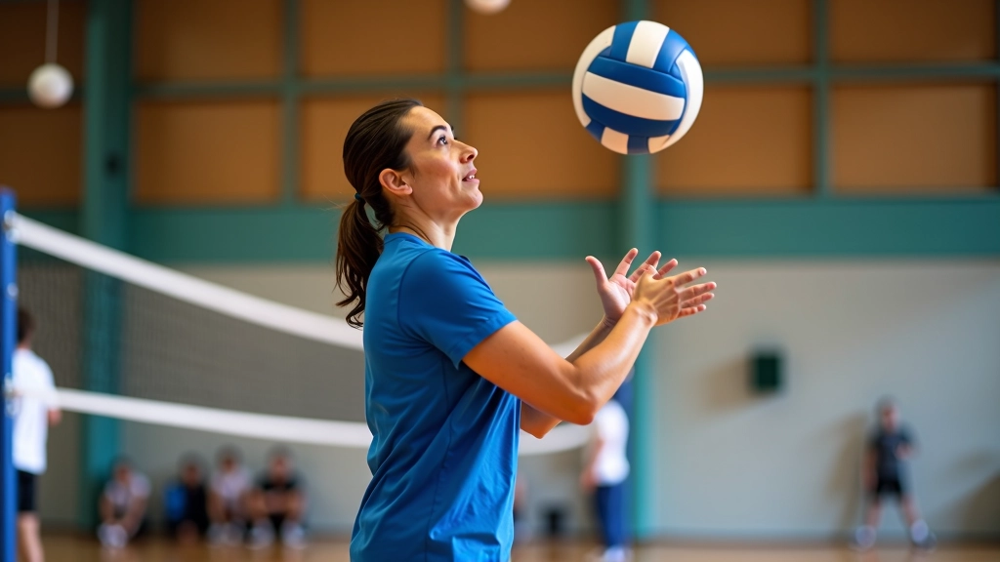
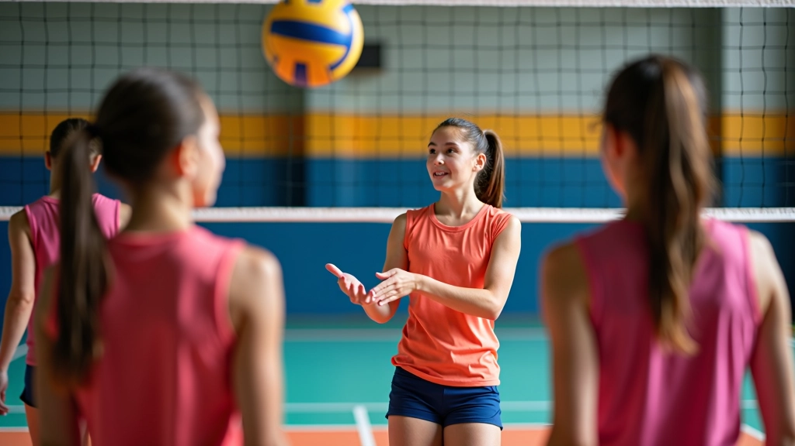

الخطوات الأساسية لإتقان تقنية التمرير
تعلم كيفية تحسين دقة التمرير من خلال تقنيات صحيحة وتدريبات متكررة تناسب جميع مستويات اللاعبين.
اقرأ المزيداكتشف الأخطاء الشائعة في الإرسال والطرق الفعالة لتصحيحها وزيادة قوة الإرسال مع الحفاظ على الدقة والتحكم.


فريق المحتوى التحريري
الإرسال هو أول اتصال لفريقك بالكرة في كل جولة لعب. إنه ليس مجرد بداية — إنه سلاح قوي يمكن أن يحدد مسار اللعبة. الكثير من اللاعبين الناشئين يركزون على القوة فقط، لكن التحكم والدقة هما ما يفصل بين الإرسال العادي والإرسال الفعال.
عندما تراقب لاعبي المستوى العالي، ستلاحظ أن أجسامهم مستقرة تماماً قبل الإرسال. الوقفة صحيحة، الكتفان متوازيان، والعينان مركزة على الهدف. نعم، يستغرق الأمر وقتاً لتطوير هذه الحركات. لكن بعد 6-8 أسابيع من التدريب المركز، ستلاحظ فرقاً حقيقياً.
في التدريبات التي تشرف عليها، نرى نفس الأخطاء مراراً وتكراراً. الخطأ الأول؟ قدماً متقاربتان جداً. يقف اللاعب كأنه في انتظار شيء، بدلاً من أن يكون جاهزاً للعمل. القدماً يجب أن تكونا بعرض الأكتاف تقريباً، مع تقدم قدم واحدة قليلاً — هذا يعطيك التوازن والقوة.
الخطأ الثاني: رفع الكتف الخاطئ. كثير من الناشئين يرفعان كلا الكتفين معاً. لا. يجب أن يرتفع كتف الذراع غير الضاربة قليلاً فقط. الكتف الضارب ينخفض قليلاً. هذا التناظر يعطيك القوة والدقة معاً. والخطأ الثالث — وهذا شائع جداً — النظر بعيداً عن الكرة. عينك تجب أن تكون على الكرة من لحظة رفعها إلى لحظة ضربها.

هذا المقال يقدم معلومات تعليمية حول تقنيات الإرسال في الكرة الطائرة. كل لاعب مختلف في قدراته الجسدية والمرحلة العمرية. من المهم العمل مع مدرب مؤهل يمكنه تقييم تقنيتك الخاصة وتقديم تصحيحات شخصية تناسب احتياجاتك.
القوة وحدها لا تكفي. تحتاج إلى التوازن بينها وبين التحكم. في المعسكر، نستخدم تمارين محددة لبناء كليهما معاً.
ابدأ برمي الكرة برفق من 3 أمتار، مع التركيز على الحركة الصحيحة. كرر 20 مرة، 3 مجموعات.
بعد أسبوع، انتقل إلى 6 أمتار. ثم 9 أمتار في الأسبوع الثالث. الهدف: الوصول للشبكة بتحكم كامل.
عندما تصل للشبكة بثبات، ابدأ بزيادة السرعة. ركز على الحركة الصحيحة أولاً، القوة تأتي لاحقاً.

كيف تعرف أنك تتحسن؟ لا تنتظر حتى تشعر بالفرق. قس تقدمك بشكل حقيقي. احسب عدد الإرسالات الناجحة من كل 10 محاولات. في الأسبوع الأول، قد تحصل على 5-6. بعد شهر، يجب أن تصل إلى 7-8. بعد شهرين، 8-9 على الأقل.
التدريب ثلاث مرات أسبوعياً يعطيك أفضل النتائج. جلسة واحدة كل 48 ساعة تسمح لعضلاتك بالتعافي مع بناء القوة. والتنويع مهم أيضاً. لا تقتصر على الإرسال الأمامي فقط. مارس الإرسال الجانبي والإرسال من فوق الكتف. كل نوع يطور عضلات وحركات مختلفة.
الإرسال ليس سحراً. إنه مهارة مثل أي مهارة أخرى — تتطلب ممارسة منتظمة وتصحيحات دقيقة. البداية الصحيحة هي الوقفة والحركة الأساسية. لا تسرع نحو القوة. بعد أن تتقن التحكم، يمكنك إضافة السرعة.
المفتاح هو الاستمرارية. أسبوع واحد من التدريب لن يغير شيئاً. لكن ثمانية أسابيع متتالية؟ ستشعر بفرق حقيقي. ستكون أقوى. ستكون أكثر دقة. وستصبح لاعباً يُعتمد عليه في الملعب.
استمر في تطوير مهاراتك من خلال هذه الموارد الإضافية
تعلم كيفية تحسين دقة التمرير من خلال تقنيات صحيحة وتدريبات متكررة تناسب جميع مستويات اللاعبين.
اقرأ المزيد
تعرف على أهم التمارين اللياقية والتدريبات الخاصة بلاعبي الكرة الطائرة لتحسين القوة والتحمل.
اقرأ المزيد
تعلم الخطط التكتيكية الأساسية والمتقدمة لتحسين قدرات الفريق على القراءة والاستجابة السريعة.
اقرأ المزيد